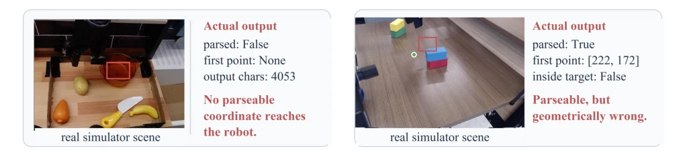
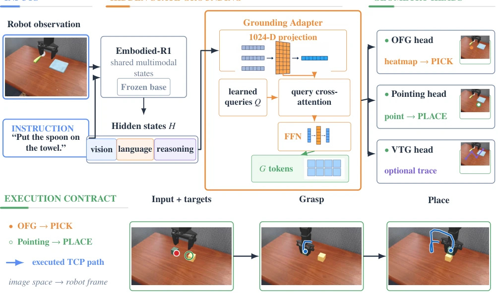
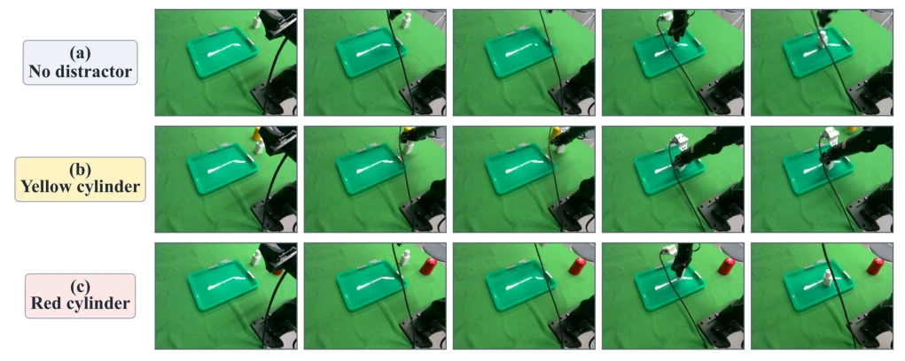

This paper implements a "spatial interface modification" for VLA models, targeting the pain point directly: existing VLAs either output coordinates (prone to parsing errors) or black-box tokens (uninspectable). Pointing-VLA rejects "human-readable" coordinate generation, instead adopting a "typed hidden-state spatial readout", splitting points, functional regions, and trajectories into separate heads to directly output geometric data. This approach is quite clever, saving parsing trouble and boosting inference speed by nearly 7 times. However, it hard-binds PICK and PLACE to OFG and Pointing; what if the task is not pick-and-place? Is this "execution contract" a bit too rigid? Although it tops the leaderboard on Bridge/WidowX, the transfer phase remains a bottleneck in real-world deployment. Overall, it is a good attempt to liberate "spatial understanding" from "language generation", emphasizing interpretability, but do not expect it to be omnipotent, as it still relies on specific execution backends and its generalization ability to non-standard tasks is questionable.
研究动机Motivation
VLA 模型虽然能连观测、语言和动作，但输出接口是瓶颈。现有方法如 RT-1 (Brohan et al. 2023) 或 PaLM-E (Driess et al. 2023) 多依赖自回归文本坐标或动作 token。文本坐标生成可能失败，或者解析后坐标还是错的（Figure 1），导致几何成为事后思考，解析成了执行依赖。Pointing-VLA 认为具身 grounding 应该是 typed interface prediction，而不是 text-coordinate generation。引用 Goodale and Milner 1992 等神经科学观点，下游读解应解码空间变量而非序列化。现有工作如 RoboPoint (Yuan et al. 2025a) 或 Embodied-R1 (Yuan et al. 2025b) 虽涉及 grounding，但未明确 executor 该消费何种接口，导致空间表达与执行需求不匹配，且串行化文本降低了效率。
Although VLA models can link observations, language, and actions, the output interface is a bottleneck. Existing methods such as RT-1 (Brohan et al. 2023) or PaLM-E (Driess et al. 2023) mostly rely on autoregressive text coordinates or action tokens. Text coordinate generation may fail, or coordinates may still be wrong after parsing (Figure 1), causing geometry to become an afterthought and parsing to become execution-dependent. Pointing-VLA posits that embodied grounding should be typed interface prediction, rather than text-coordinate generation. Citing neuroscientific perspectives such as Goodale and Milner 1992, downstream reading should decode spatial variables rather than serializations. Existing works like RoboPoint (Yuan et al. 2025a) or Embodied-R1 (Yuan et al. 2025b) involve grounding but do not specify what interface the executor should consume, leading to a mismatch between spatial representation and execution requirements, and serialized text reduces efficiency.

Figure 1: Representative text-coordinate failures. Left: generation yields no parseable coordinate. Right: [222, 172] is parseable but lies outside the target region.
Overall based on Embodied-R1 shared multimodal state. The core is Hidden-State Spatial Readout, projecting into grounding space via a Grounding Adapter, then decoding with expert-specific queries. The Pointing head uses a learned pointer query to select evidence, directly outputting normalized points (x,y), without generating text coordinates. The OFG head retains spatial range, generates a heatmap after modulating feature maps via FiLM, with peaks serving as grasping cues. The VTG head uses temporal queries to generate visual trajectory points. Training is divided into three stages: Geometry warm-up trains adapter and head, LoRA specialization updates backbone low-rank parameters, Task continuation updates specific subsets. Execution contract is fixed: PICK uses source-conditioned OFG, PLACE uses Pointing. An external wrapper converts image coordinates to robot frames. Loss functions are weighted, Pointing uses SmoothL1, OFG uses heatmap MSE/BCE. Pointing also adds GRPO-style refinement to optimize the continuous spatial head. This design avoids text serialization, directly outputting the geometric form needed by the executor, ensuring determinism.

Figure 2: Pointing-VLA architecture and typed interfaces. Embodied-R1 hidden states feed point, OFG/contact- heatmap, and VTG-waypoint heads; fixed PICK/PLACE slots use source-conditioned OFG/Pointing, and a wrapper maps image geometry to robot coordinates.
On Bridge/WidowX, fixing the OFG-PICK/Pointing-PLACE contract achieves 72.9% average success rate, outperforming Embodied-R1+CuRobo. Cross-dataset validation shows Pointing is stronger than RefCOCO, OFG is stronger than AGD20K. Inference speed is 6.68-6.90 times faster than text decoding. NORA-1.5 transfer retains success rate and shortens controller time by 20 times. Real-world deployment on PiPER, combined with π0.5 strategy (Black et al. 2025), success rate rises from 52.7% to 80.7%, mainly reducing grasping and tray arrival failures. Ablation experiments show 8 queries and rank-32 LoRA perform best. VTG trajectory evaluation uses RMSE, ADE, FDE. These results prove the effectiveness of typed readouts as efficient interfaces, but also expose task-specific dependencies.

Figure 4: Representative successful real-robot rollouts across three visual contexts, each ordered from initialization to stable release.